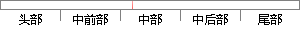

实现管理人员对于宿舍内的人员、资源管理，可以对学生们提交的申请进行审批。
片段位置图

相似结果|
相似片段 1：获取主管负责人对招聘申请的审批结果，人力资源管理用户可以对所有提交的申请进行查询，结合批复结果的不同作出相应的操作。对于已经通过的申请，进一步进入招聘流程，对于已经拒绝的申请则撤销其申请状态，对于需要
|
※ 片段修改建议 ※
近似词参考：- 对于：对 对付
- 人员：职员
- 学生：门生
- 进行：举行
系统自动生成语句：实现管理职员对宿舍内的职员、资源管理，可以对门生们提交的申请举行审批。
注：本片段修改建议为系统自动生成，仅供参考。